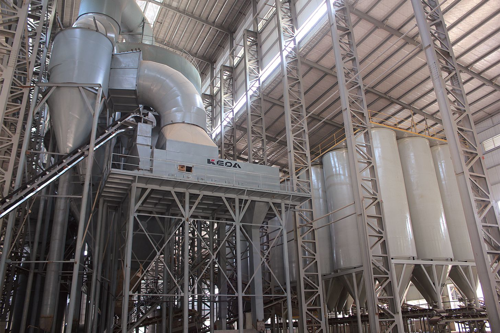
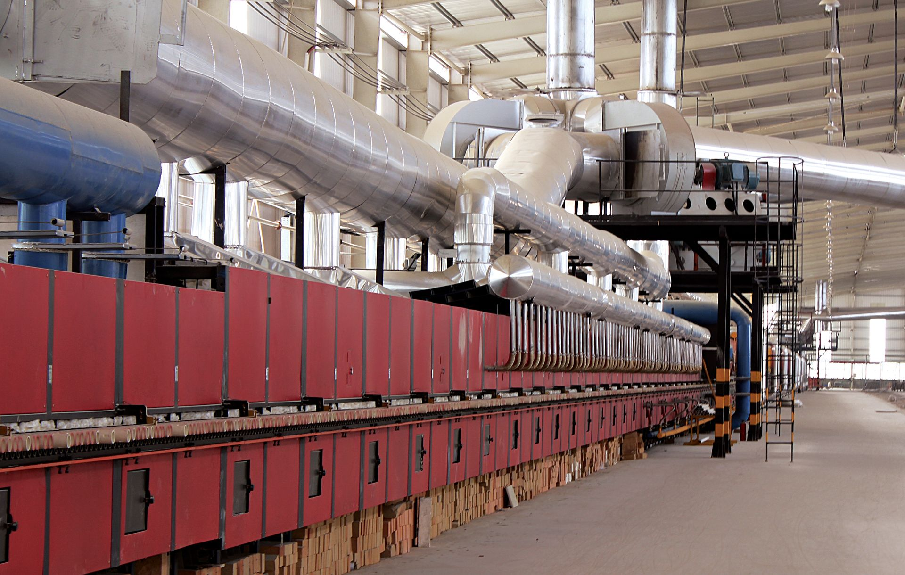

ABOUT · 关于岩屿
OUR STORY · 品牌故事
岩屿的故事，始于一次山间的行走。创始人立于裸露的岩层前， 看见亿万年的地壳运动、水流与风蚀，如何在石面上留下不可复制的纹理。 那一刻，一个念头被烙下：能否将这种地质的庄严，凝结为人可铺陈的方寸？
于是有了岩屿。我们以石英为骨，以高温与压力模拟造山之力， 让每一片砖都携带山河的原始记忆。我们不做仿石，我们做的是—— 将地质的过程，重新发生于窑炉之中。
十余年来，我们只做一件事：户外石英砖。专注，使我们深入； 深入，使我们敬畏。我们始终相信，真正的奢华不是崭新， 而是历经岁月后，依然如初的沉静。
CREED · 信条

MANUFACTURING · 智造基地
岩屿智造基地依山而建，引进全自动压机与百米辊道窑。 从原料球磨、喷雾造粒，到万吨压制成型、1200℃ 高温烧结， 数十道工序皆由数字系统精密把控，确保每一片砖的物理性能稳定如一。
我们坚持全通体工艺——砖的内部与表面同质同色， 即使历经磨损，本色亦不减退。这是我们对"耐久"最朴素的承诺。
CRAFT · 工艺
甄选高纯度石英砂，配以天然矿物色料，经万吨压机密实成型， 再于高温窑炉中烧结。表面采用多道施釉与模具工艺， 精准复刻莱姆石的颗粒、板岩的解理、洞石的孔洞。
出窑后的每一片砖，皆经人工与光电双重检选。 我们相信，工艺的尽头，是对自然的敬意。
查看工艺成果 →
年专注石英砖
道严谨工序
抗冻性能验证